Step 1: Knowledge Base Setup (RAG Documents)
Start by building your Knowledge Base — this is where you'll upload documents that help the AI understand your business, brand, and past successes so it can generate more relevant proposals.
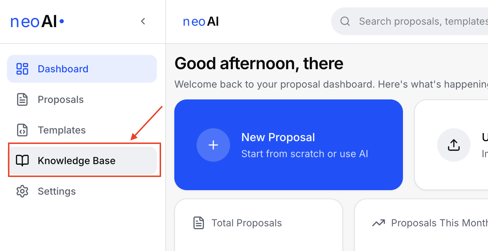
Recommended RAG Documents
For best results, upload the following types of documents to your Knowledge Base:
- Company Policy Documents
- Brand Guidelines (tone of voice, values, messaging)
- Case Studies (especially successful projects)
- Past Proposals (your best performing ones)
- Pricing Catalog / Service Packages
Pro Tip: Use PDF format whenever possible for the best text extraction and RAG performance.
How to Upload RAG Documents
Follow these steps to upload documents so the AI can learn from your past work:
- Select Document Category (Optional)
Click on the "Upload as:" dropdown and choose the appropriate category for your document. If you don't select any category, it will be automatically saved as "Others".
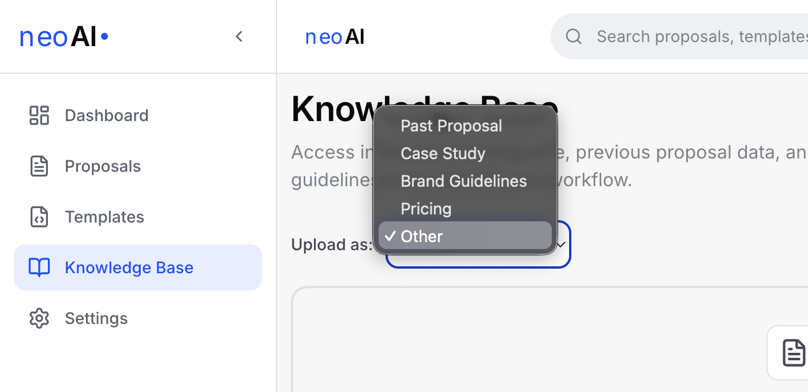
- Upload the Document
Click the "Upload Documents" button and select the file(s) from your computer.
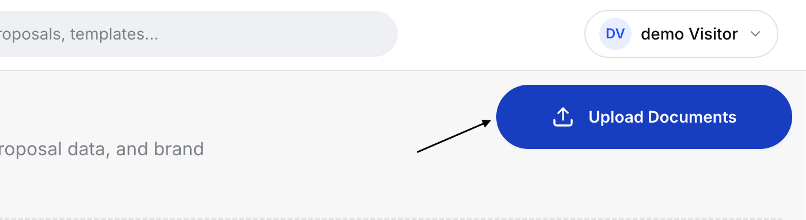
- View Uploaded Documents
Once uploaded, your documents will appear in the table below with details such as name, category, upload date, and status.
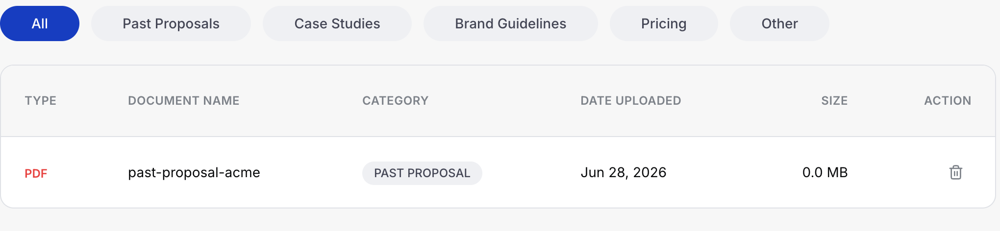
Note: For guidance on how to organize your RAG documents effectively, refer to the RAG_Documents folder included in your downloaded zip file.
Step 2: Settings Page Setup
The Settings page is your central hub for configuring the app — connect your preferred AI provider, personalize your organization's branding, and manage your team. Each configuration you complete here directly improves the quality and accuracy of the proposals you generate.
2.1 Configure AI Provider
Before generating proposals, connect an AI provider. The app supports OpenAI, Anthropic (Claude), Groq, Gemini, OpenRouter, DeepSeek and Local LLM (LM Studio).
- Choose Your Provider
Click on the provider card for the service you want to use. Supported options include:- OpenAI — GPT-4o, GPT-4o-mini, etc.
- Anthropic — Claude 3.5 Sonnet, Claude 3 Haiku
- Google Gemini — Gemini 1.5 Pro, Gemini 1.5 Flash
- Groq — Llama 3, Mixtral (fast inference)
- OpenRouter — Unified access to multiple models
- DeepSeek — DeepSeek-V2, DeepSeek-Coder
- Local LLM — Run models locally via LM Studio
- Enter API Credentials
Paste your API key in the "API Key" field. - Provide a Model Name
Enter the exact model name you'd like to use for proposal generation (e.g.,gpt-4o,claude-3-sonnet-20240229,llama3-70b-8192).
Important: The model name must match the provider's exact model identifier. An incorrect or misspelled name will cause generation to fail. Refer to your provider's documentation for the correct model string.
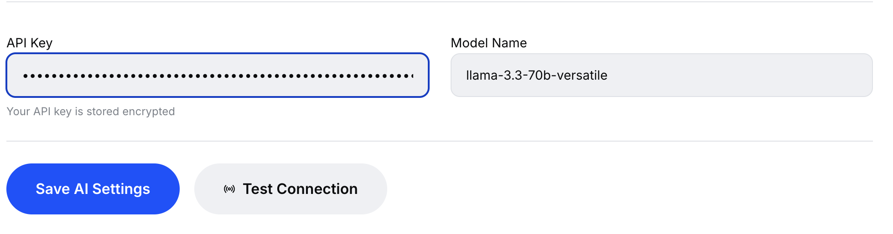
- Test the Connection
First click "Save AI Settings" then "Test Connection" to verify everything is set up correctly. A success dialog will confirm the connection and show response latency.
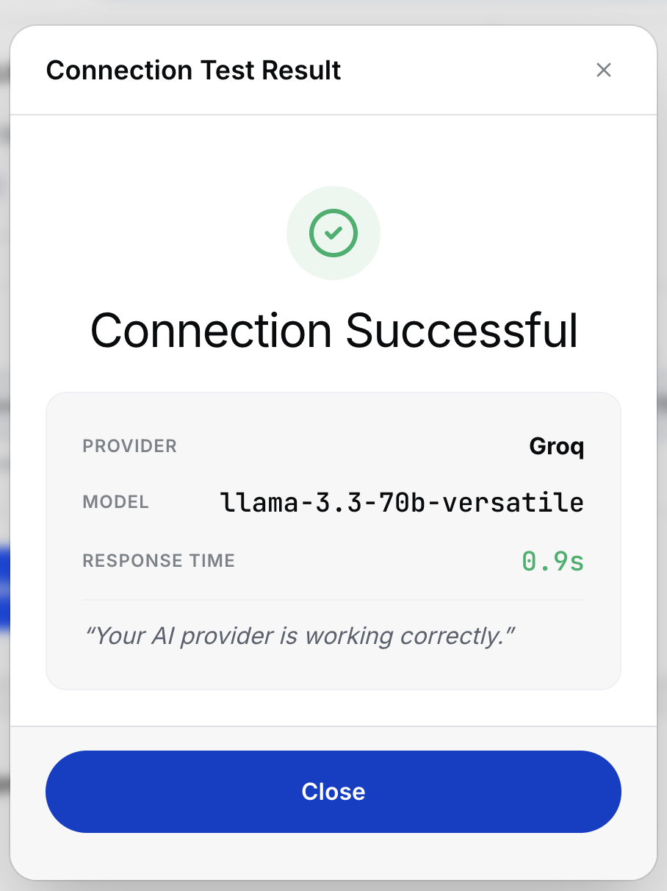
Tip: For detailed configuration guidance, including proxy setup for local models, see the AI Configuration Guide.
2.2 Set Up Your Organization
Personalize your organization's identity — this branding will appear on every proposal you send.
- Upload Your Logo
Click on "Upload Logo" to upload your brand logo. Supported formats: PNG, JPEG, or SVG (max 5MB). Use the "Remove Logo" button to replace or delete it.
Note: Before uploading, make sure the
logosstorage bucket exists in your Supabase Dashboard (Settings → Storage →logosbucket). If you haven't created it yet, refer to the Deployment Guide step 3.7 Create Storage Bucket for Logos. - Set Organization Name
Enter the name of your agency or company. - Choose Brand Color
Use the color picker to select your primary brand color. This color will be used as the accent throughout your proposals.
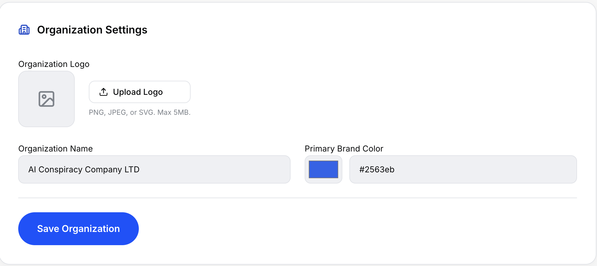
Pro Tip: Uploading your logo and setting your brand color ensures that every proposal you generate looks polished and professional.
2.3 Configure Agency Profile
The Agency Profile section feeds information about your agency directly into the AI so it can craft more personalized and relevant proposal content — especially the Executive Summary.
- Tagline — Your agency's short, memorable statement (e.g., "Award-winning digital agency specializing in Web3 & AI").
- Company Description — A brief overview of what your agency does, your mission, and what makes you unique.
- Website — Your agency's website URL so the AI can reference your online presence.
- Services Offered — Add the services you provide by typing them in and clicking "Add". Remove any service by clicking the X icon.
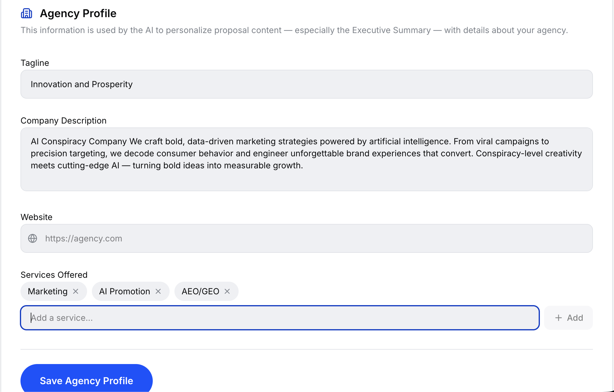
Business Value: A well-filled agency profile helps the AI write proposals that sound like they came from your team, not a generic template.
2.4 Invite Team Members
Collaborate with your team by inviting members to your organization. You can assign roles to control what each person can do.
- Enter Email Address — Type the email address of the person you want to invite.
- Select Role — Choose the appropriate role for the new member:
| Role | Permissions |
|---|---|
| Admin | Full access — can manage settings, team, and all proposals |
| Editor | Can create, edit, and manage proposals; cannot change settings |
| Viewer | Read-only access to proposals and templates |
- Generate Invitation — Click "Generate Invitation". This will create an
invite_tokenyou can copy and share with the intended member along with instructions to join your organization.
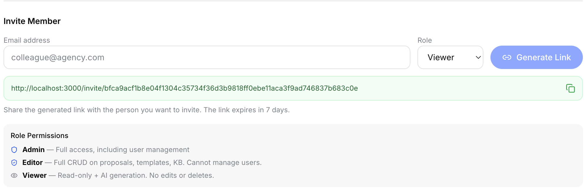
Important Note: Only Admin can send member invitations.
Step 3: Create Your First Proposal
Once your settings and knowledge base are ready, you can start creating proposals. There are two ways to collect client intake data and generate proposals — in-app and via external widget.
3.1 Create a Proposal Manually (In-App)
From the Dashboard or in Proposal Page, you can create a new proposal by entering client intake information directly through the "Create Proposal" dialog. This method is ideal for phone calls, in-person meetings, or when you already have all client details at hand.
- Open the Create Proposal Dialog
From the Dashboard, click "Create New Proposal" or use the quick action card. A multi-step dialog will guide you through the process.
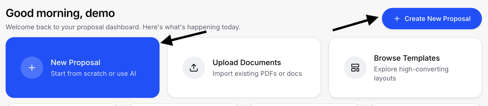
- Step 1 — Basic Info
Enter the client's basic details:- Client Name
- Company Name
- Client Email & Phone
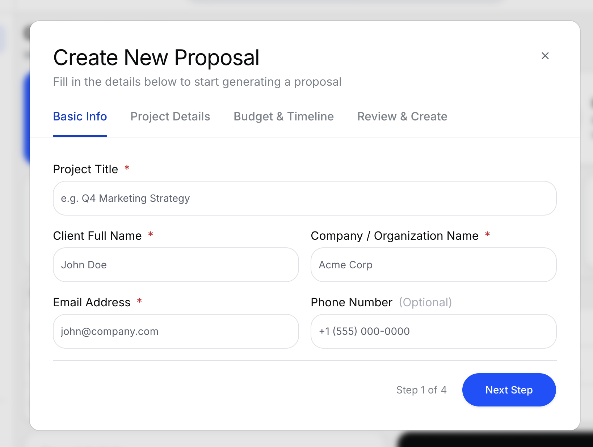
- Step 2 — Project Details
Provide information about the scope of work:- Project Title — Give your proposal a clear, descriptive title
- Project Description — Summarize the work, goals, and deliverables (used by the AI for content generation)
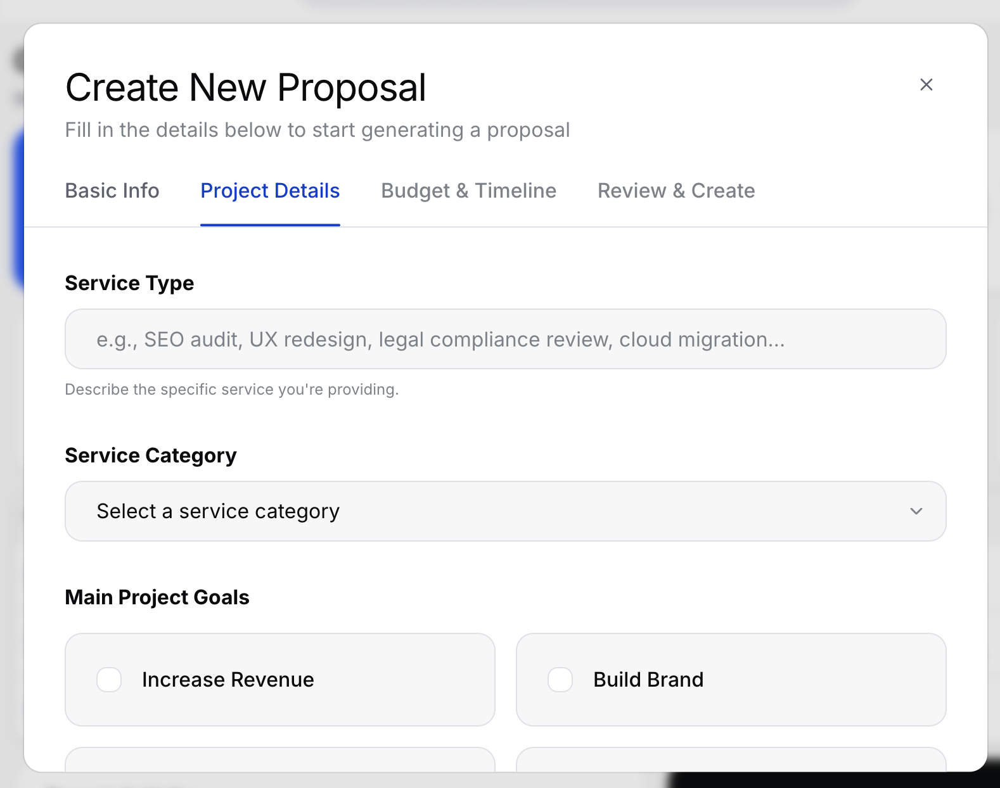
- Step 3 — Budget & Timeline
Set the financial and scheduling parameters:- Budget Range — Select an estimated budget bracket
- Timeline — Choose expected project duration
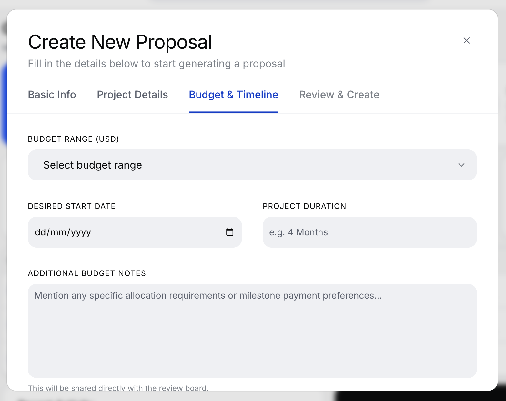
- Step 4 — Review & Create
Review all entered information, select a template if desired, and click "Create Proposal". After creation you'll be taken to the proposal editor where you can refine content, apply AI generation, and add sections. The AI will leverage your Knowledge Base documents and Agency Profile to craft relevant content.
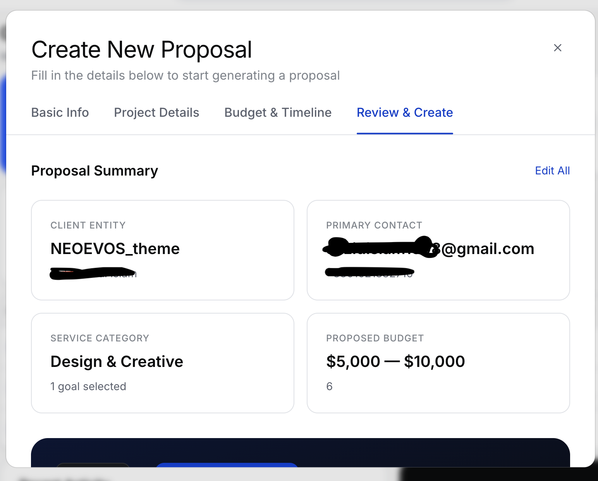
3.2 External Widget Integration
The Intake Widget allows potential clients to submit their project requirements directly from your website. Submissions are automatically captured and converted into draft proposals inside your app.
How It Works
The widget is a lightweight, embeddable form hosted on your deployed app. Clients fill out their details through a guided multi-step intake form. Once submitted, a new proposal is created in your dashboard with the status "Intake Received".
Finding Your Organization Slug
The widget requires your organization slug to route submissions to the correct account. Follow these steps to find it:
Option A: From Supabase Dashboard (SQL Editor)
- Go to your Supabase Dashboard → SQL Editor
- Run the following query:
SELECT id, name, slug FROM public.organizations; - Copy the
slugvalue for your organization (e.g.,my-agency).
Option B: From Supabase Dashboard (Table Editor)
- Go to your Supabase Dashboard → Table Editor →
organizations - Look for the
slugcolumn for your organization row.
Your organization slug is auto-generated during setup — it's a URL-friendly version of your organization name (e.g., "My Agency" becomes my-agency).
Embedding on Your Website
Once you have your organization slug, follow these steps to embed the intake widget on your site:
- Visit the Embed Demo Page
Go tohttps://your-app-domain/widget/embed-demoin your browser. - Locate the "Iframe Embed" Section
Scroll down to the Iframe Embed section. You'll see a pre-built iframe snippet with your organization slug pre-filled. - Copy the Embed Code
Click the copy icon next to the iframe snippet. - Add to Your Website
Paste the copied code into your website's HTML where you want the intake form to appear:
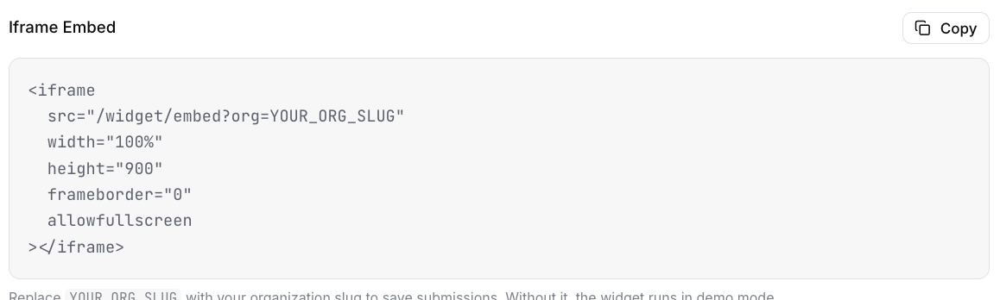
Replace:https://your-app-domainwith your actual app URLYOUR_ORG_SLUGwith the slug you found in Supabase (e.g.,my-agency)
The widget will render a responsive, step-by-step Intake Form that clients can fill out directly on your site. Submitted data is automatically captured and converted into a draft proposal in your dashboard.
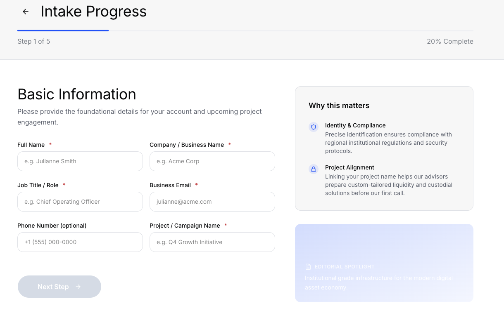
Testing the Widget
Before embedding on your live site, you can test the widget at:
https://your-app-domain/widget?org=YOUR_ORG_SLUGThis opens the full-page intake form — the same form your clients will see when embedded.
Widget Demo Page
You can also view an interactive demo with live code examples:
https://your-app.com/widget/embed-demoThis page shows:
- A live preview of the embed code
- Copy-paste ready HTML snippets
- REST API examples for programmatic intake submissions
Managing Intake Submissions
When a client submits the widget:
- A new proposal is created automatically in your dashboard
- The status is set to "Intake Received"
- You can open the proposal, review the intake data, and generate a full proposal using AI
Step 4: Proposal Generation & Management
This is where the app truly shines — using your Knowledge Base documents and saved settings, the AI creates a polished proposal for you. You can then refine it section by section, save different versions, and export the final result.
4.1 View Your Proposal
After creating a proposal, it appears in the Proposals table on the main Dashboard. Click the eye icon (👁) in the action column to view the proposal's details.
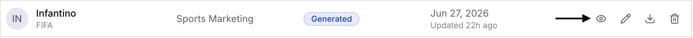
This opens the Proposal Overview page with three main tabs:
- Overview — Quick stats, client info, and proposal summary
- Generate AI — The AI content generation interface
- Versions — Version history for the proposal (only appears after the first AI generation)
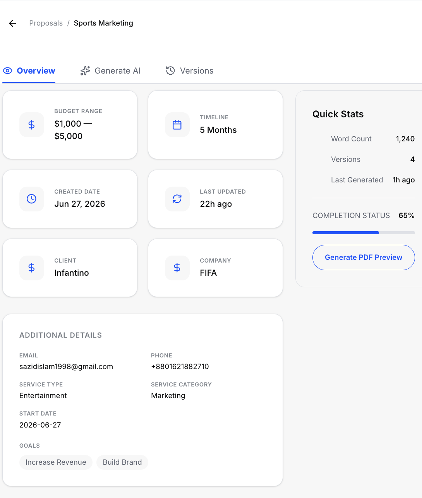
4.2 Generate Content with AI
The Generate AI tab is where you turn your intake data into a full proposal. Follow these steps:
- Select a Template
Choose from the list of available templates. Each provides a different structure and tone for your proposal:- Pre-built Default Templates — A balanced, professional template covering all essential sections, seeded during deployment
- Custom Template — Your own saved templates, which you can add via the Templates Page
Note: You can create and manage custom templates from the Templates page in the sidebar.
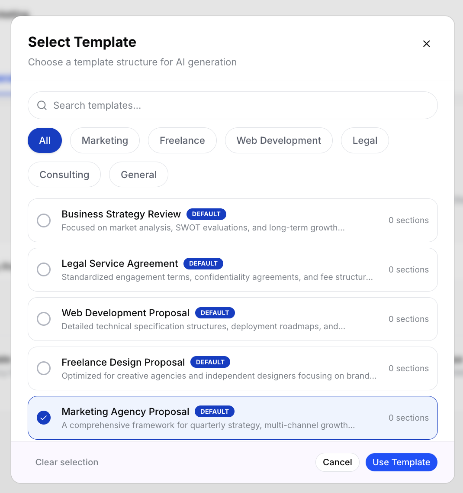
- Ensure an AI Provider is Connected
Before generating, verify that you have selected and saved an AI Provider from the Settings Page. Without a configured provider, generation will not work. - Click "Generate Proposal"
The AI processes the client intake data, your Knowledge Base documents, and Agency Profile to generate a complete proposal. This may take 30–60 seconds depending on the model.
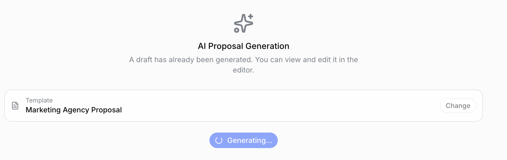
- Auto-Redirect to Editor
Once generation is complete, you are automatically taken to the Proposal Editor page where the generated content appears, organized into sections.
4.3 Edit Proposal Sections
The Editor page gives you full control over every section of your proposal:
- Navigate Sections
Use the section tabs at the top of the editor to switch between different parts of the proposal (e.g., Executive Summary, Services, Pricing, Timeline). Each section can be individually edited.
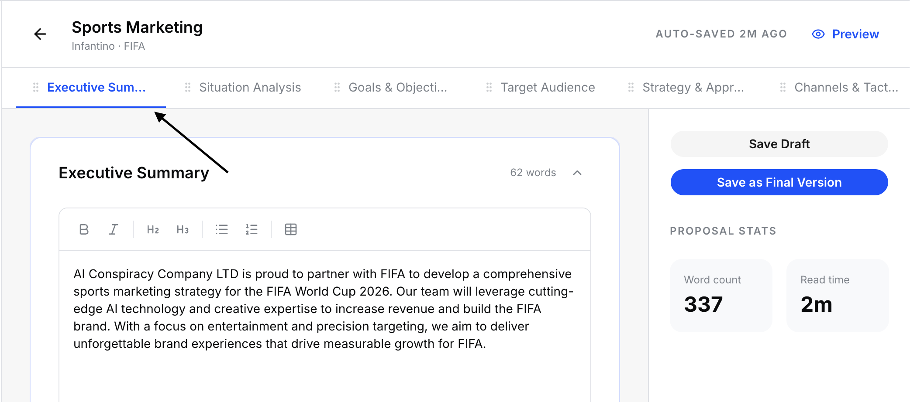
- Edit Content
Each section has editable text fields. You can refine the AI-generated content, add your own touch, or replace it entirely.
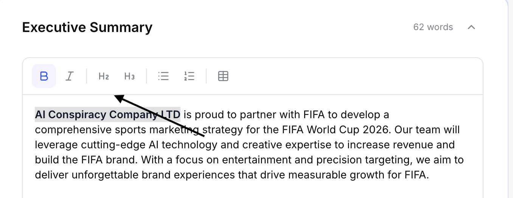
- Preview as PDF & Download
Click "Preview PDF" at any time to open a dialog showing exactly how the proposal will look when exported. The preview includes your organization's color scheme, name, logo, and contact information. Inside the preview, click "Download PDF" to save the file to your computer. - Save Your Work
| Action | Description |
|---|---|
| Save Draft | Saves your progress as a draft — you can continue editing later |
| Save as Final Version | Marks the version as final. A new version entry is created in the Versions tab |
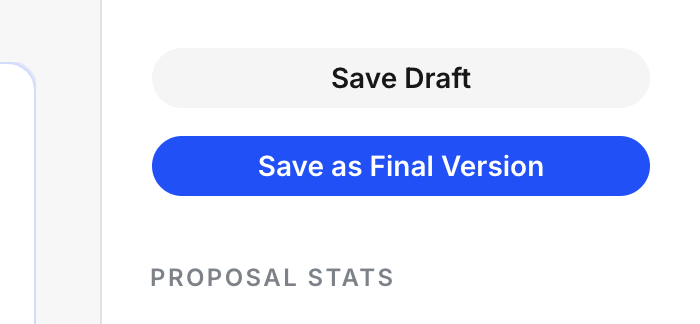
4.4 Version Management
The Versions tab keeps a complete history of every saved version of your proposal, giving you the freedom to experiment without losing previous work.
- Access Versions
From the Proposal Overview page, click the "Versions" tab. (This tab only appears after the first AI generation.)
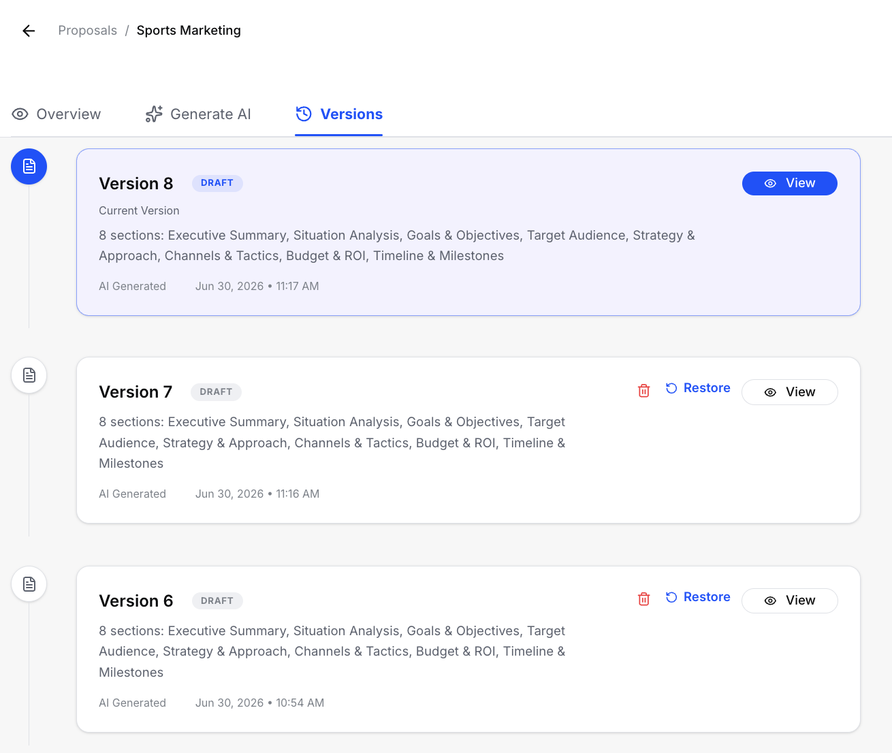
- Version History
Each time you save (draft or final), a new version is recorded with:- Version number (v1, v2, v3, etc.)
- Status — Draft or Final
- Timestamp — When it was saved
- Created by — The team member who saved it
- Restore a Previous Version
To go back to an earlier version:- Locate the version you want in the list
- Click the restore icon
- Confirm the restoration
- The editor will reload with that version's content, allowing you to continue editing from that point
- Re-edit Any Time
You can always generate a new AI version or edit manually — every save creates a new entry in the version history, so nothing is ever lost. This means you can experiment freely with different approaches, knowing you can always revert.
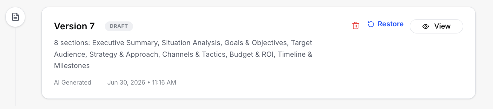
4.5 Export & Share
Once your proposal is ready, export it as a professional PDF:
- Click "Preview PDF" from the editor or proposal overview page.
- Review the rendered PDF preview — it will include your organization's branding, colors, and logo.
- Click "Download PDF" to save it to your computer.
- Share the PDF with your client via email or your preferred channel.
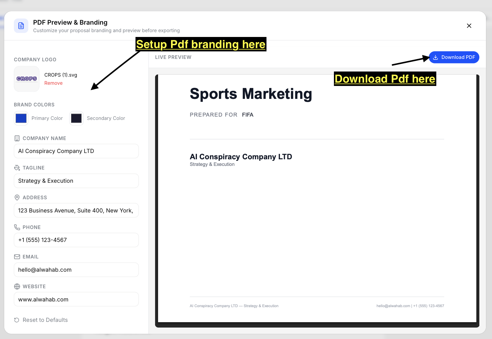
Step 5: Next Steps
Once you've mastered the basics, here are more advanced capabilities to explore:
- Create Custom Templates — Create a Custom reusable templates.
- RAG Knowledge Base — Upload more documents to improve AI accuracy over time.
- Team Collaboration — Invite editors to streamline proposal creation.
- Widget Integration — Embed the intake widget on multiple websites to capture leads.
For additional help, refer to the deployment, AI configuration, and local LLM guides in the /docs folder. 🚀